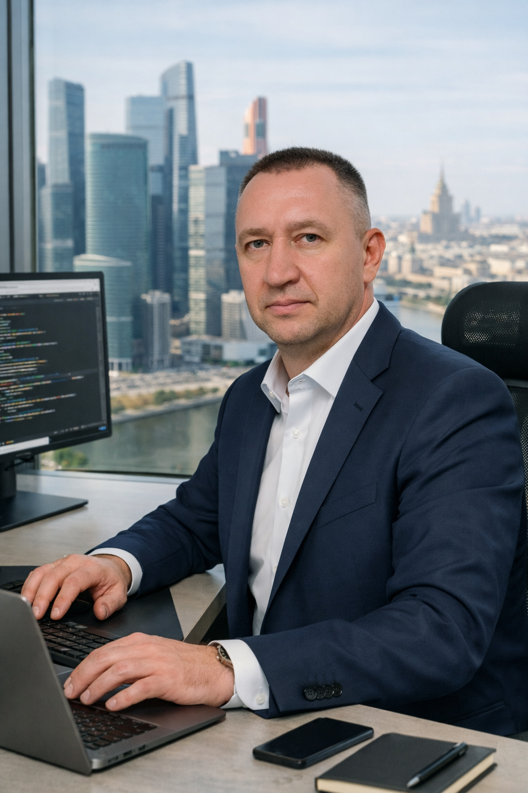

Denis Maslenikov
Я создаю современные, быстрые и понятные сайты, которые помогают бизнесу доносить ценность, вызывать доверие и превращать посетителей в клиентов.
Обо мне
Я создаю сайты с акцентом на ясность, удобство и высокую скорость работы. В моей работе сочетаются структурная вёрстка, продуманная типографика и адаптивный фронтенд, чтобы сайт выглядел и работал идеально на любом устройстве.
Если вам нужен сайт‑визитка, лендинг, портфолио или небольшой сайт для бизнеса — я превращу вашу идею в аккуратный, функциональный и визуально цельный продукт.
Что я делаю
Обновление существующего сайта: современный дизайн, улучшенный UX, высокая скорость и аккуратная структура. Без создания с нуля.
Одностраничный сайт, который продаёт. Чистый дизайн, понятная структура, адаптивная вёрстка и высокая конверсия.
Многостраничный сайт для компаний и брендов. Дизайн всех страниц, удобная навигация, единый стиль и современная вёрстка.
Профессиональный перевод RU/EN для сайтов и интерфейсов. Чёткий, точный и адаптированный под аудиторию текст.
Портфолио
Минималистичный одностраничный сайт с чистой структурой, аккуратной типографикой и современной вёрсткой.
Коммерческий лендинг с акцентом на читабельность, мобильный опыт и конверсионный UX.
Контакты
Готов помочь с вашим проектом — будь то редизайн, новый лендинг или полноценный сайт.
Email: sanmaksas@gmail.com
Telegram: @sanmaksas1